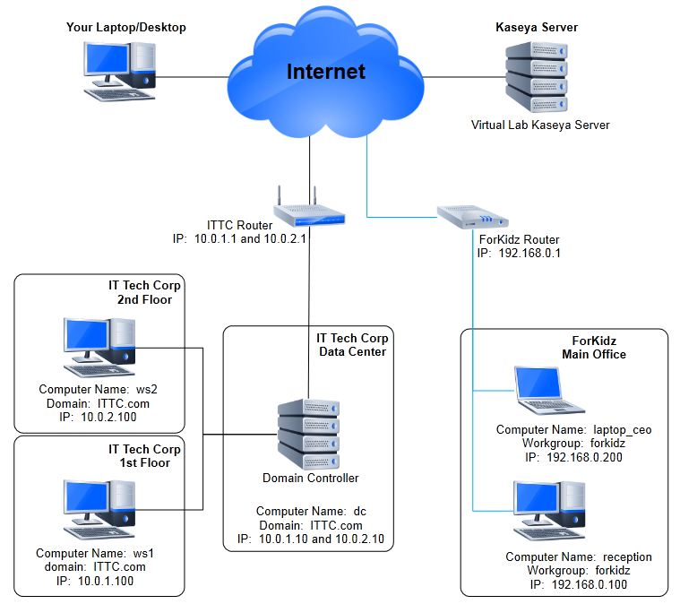

Notes on how to compose and submit the answer file:
- To show your work for each one of the questions, you must get one or more screenshots, which must be included in your answer file.
- Note that it is not enough to include only screenshots that show merely the initiation of a process or activity. In addition to such screenshots, you must also include screenshots that show the outcome of your work and to prove your work was successfully performed. For example, if you are asked to deploy Chrome on pc1, not only you need to include a screenshot that shows your approach, but also you need to include one that shows a Chrome window is displayed on pc1.
- For reports, in addition to the screenshots that show you have built a report in VSA for as a reponse to the respective questions, you also need to generate the reports in the requested format, download them, and include them in the answer file.
- In case you experience any issues that would not let you perform the requested task, you must get relevant screenshots that show the issues you have faced.
- Each screenshot must clearly show the date and time of the corresponding system.
- Each screenshot must be named using this format: nn-mm.jpg, where nn indicates the question number and mm is a serial number showing the screenshot number for this question. For example, 01-01.jpg is the first screenshot taken to show your work for question one and 03-02.jpg is the second screenshot taken to show your work for question three.
- The preferred format of the screenshots is JPG, but other popular formats such as TIFF, GIF, and PNG are acceptable too. Note that the extention of the files must follow their formats. For example, if you choose to save the screenshots as GIF, then the first screenshot for the first question must be named as 01-01.gif.
- The name of the report files must follow the same naming convention as that of screenshots as explained above and the extension must follow its format.
- The name of the report files must follow the same naming convention as that of screenshots as explained above and the extension must follow its format.
- Include all the screenshots and report files in one zip file, called the answer file, and submit this file using the link below the question page or the one on the course main page included in the Certificate Test category.
- The answer file name must follow this format: firstname-lastname.zip, where firstname and lastname are your first and last names.
- The preferred format of the answer file is ZIP, but other popular formats such as 7z, TAR, and GZ are acceptable too. Note that the extention of the answer file must follow its format.
- The answer file must be submitted no later than 10 minutes after the question page is closed.
- Upload the zip file using the link to: Certification Exam Hands-On: Submit Answers link shortly after you are done with your test. This link can also be found on this certification portal at ITA Portal > Your Course > CERTIFICATE EXAM > Part II: Hands-On > Certification Exam Hands-On: Submit Answers.
BACKGROUND
You have been hired as the lead IT Administrator at IT Tech Corp where their workstations are housed in a single building, but on two separate floors. These floors will represent machine groups. There are two representative workstations, ws1 and ws2, that belong to AD groups "Floor1" and "Floor2". The AD is pre-configured reflecingt these groups: ws1 belongs in the AD group Floor1 and ws2 belongs in the AD group Floor2. You would need to will use these default groups when discovering these devices via Domain Watch, and the machine groups will be auto-built as part of the Domain Watch process. Depending on the following questions, you may need to build the other machine groups manually (org ITTC will have machine group datacenter; org ForKidz will have machine group mainoffice).

Fig. 1: A logical diagram of IT Tech Corp and ForKidz' networks.
You have decided to employ a Kaseya server to help you manage all computers at Data Center, Floor1, Floor2, and and ForKidz. Your Kaseya server is now installed and is fully operational.
Notes for interpreting the questions:
- The term "workstations" refers to any computer other than servers. In other words, ws1, ws2, reception, and laptop_ceo are all referred to as workstations and dc is referred as server.